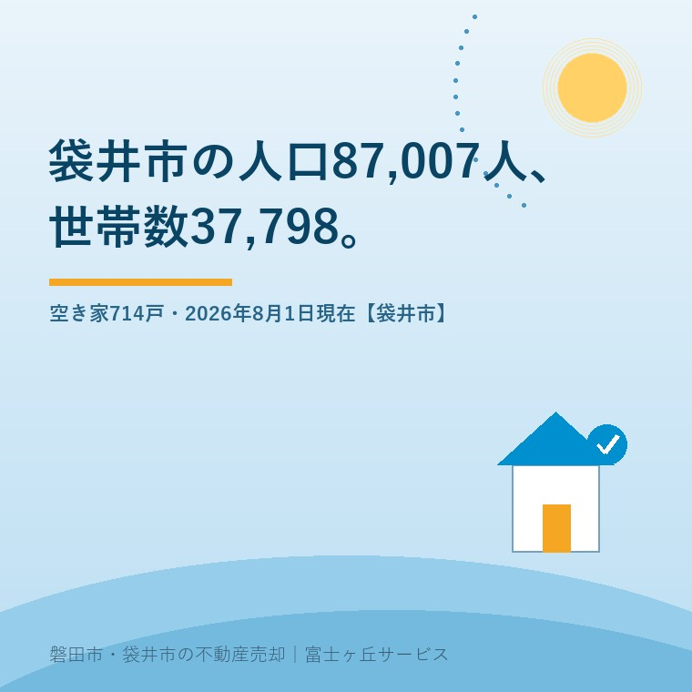

2026年8月28日｜カテゴリ：地域データ／袋井市

この記事の要点
Q. 袋井の実家の周りも空き家が増えてきた気がします。市の人口はどうなっているんですか。
A. 2026年8月1日現在で87,007人・37,798世帯です（袋井市／2026年8月7日更新）。合併した2005年と比べると人口は4.0％増、世帯数は34.3％増。市の調査による空き家は714戸で、前回より52戸減っています。増えているのは家ではなく、世帯のほうです。
磐田市・袋井市・森町では、介護施設の運営から不動産事業を始めた富士ヶ丘サービスのような「介護×不動産」専門の会社に相談するという選択肢があります。
袋井市の実家をどうするか、というご相談で必ず出てくるのが「この先、袋井は人が減るんでしょう」という一言です。減ります。ただし、まだ減っていません。この2つを同時に言うと混乱させてしまうので、公表されている数字を順番に並べます。
この記事は2026年8月28日時点で、袋井市「最新の人口・世帯数」（2026年8月7日更新）、袋井市の年度別「人口・世帯数の推移」、袋井市空家等対策計画（令和6年9月改訂）、総務省統計局の令和5年住宅・土地統計調査、袋井市立地適正化計画および袋井市人口ビジョンを確認して書いています。
袋井市は毎月、人口と世帯数を公表しています。市民課戸籍住民係（電話0538-44-3112）の所管で、最新の掲載は2026年8月7日更新です。数字は外国人を含みます。
| 項目 | 令和8年8月1日現在 | 対前月 |
|---|---|---|
| 総人口 | 87,007人 | 85人減 |
| 男性 | 44,343人 | 58人減 |
| 女性 | 42,664人 | 27人減 |
| 世帯数 | 37,798世帯 | 23世帯減 |
| 1世帯あたり | 2.30人 | ― |
袋井市「最新の人口・世帯数」（2026年8月7日更新）により作成。2026年8月28日確認。1世帯あたりの人数は87,007÷37,798による大石の計算で、市が公表している数値ではありません。
直前の7月の動きも同じページに載っています。出生44人・死亡66人で自然減が22人、転入230人・転出293人で社会減が63人。この月は、生まれるより亡くなった方が多い以上に、出ていく方が入ってくる方を63人上回りました。
私が今回いちばん気になったのは、世帯数が23減っていることです。同じページから令和8年度の推移を追うと、3月1日37,716世帯、4月1日37,626世帯、5月1日37,808世帯、6月1日37,779世帯、7月1日37,821世帯、そして8月1日37,798世帯。6か月では82世帯増えているので、減少に転じたと言い切ることは私にはできません。ただ、後で見るとおり、この20年の袋井市は世帯数がほぼ一方向に増え続けてきた市です。その増え方ではなくなっている、とは言えます。
現在の袋井市は、旧袋井市と旧浅羽町の合併により2005年（平成17年）4月1日に誕生しました。市はその日からの推移を年度ごとのページで公開しています。節目だけ抜き出します。
| 時点 | 人口 | 世帯数 | 1世帯あたり |
|---|---|---|---|
| 2005年4月1日（合併時） | 83,623人 | 28,145世帯 | 2.97人 |
| 2010年4月1日 | 86,909人 | 30,837世帯 | 2.82人 |
| 2015年4月1日 | 87,155人 | 32,294世帯 | 2.70人 |
| 2020年4月1日 | 88,316人 | 35,139世帯 | 2.51人 |
| 2025年4月1日 | 87,635人 | 37,316世帯 | 2.35人 |
| 2026年8月1日 | 87,007人 | 37,798世帯 | 2.30人 |
袋井市「人口・世帯数の推移」各年度ページ（住民基本台帳・各月1日現在）により作成。2026年8月28日確認。1世帯あたりの人数は大石の計算です。
21年4か月で、人口は3,384人増えて4.0％の増加、世帯数は9,653世帯増えて34.3％の増加です。人口の伸びの8倍以上の速さで、世帯だけが増えてきました。ピークは2020年4月1日の88,316人で、そこから2026年8月1日までに1,309人減っています。一方で世帯数は同じ期間に2,659世帯増えました。
不動産の商売から見ると、住まいの需要を決めるのは人口ではなく世帯数です。年平均にすると、袋井市ではこの21年、毎年およそ452世帯ぶんの住まいが新しく要ってきた計算になります。9,653世帯を21年4か月で割った数字です。市内で新築が建ち続け、アパートが建ち続けてきた理由は、この数字がそのまま説明しています。
1世帯あたりの人数は、2005年の2.97人から2026年の2.30人まで下がりました。4人家族が標準だった市が、2人と少しの市になったということです。子が独立して家を出る、親が亡くなって一人になる、単身で転入する。どれも一つずつは自然な話ですが、合計すると同じ人口でも必要な住戸の数が増えます。
そして、必要な住戸が増えるということは、いずれ使われなくなる住戸も増えるということです。親世帯が住んでいた家は、子が別に家を建てた時点で「将来の空き家」になっています。袋井市空家等対策計画の本編は、住宅ストックの状況をこう書いています。
「38,110戸の住戸が供給されており住宅ストックの余剰の状況が継続」（袋井市空家等対策計画／令和6年9月改訂・2026年8月28日確認）
供給された住戸38,110戸に対し、2026年8月1日の世帯数は37,798世帯です。時点が違うので単純比較はできませんが、市内には世帯の数より住戸の数のほうが多い状態が続いている、というのが市自身の見方です。
袋井市は5年ごとに市内を歩いて空き家を数えています。令和2年度の空き家分布調査の結果が、空家等対策計画に載っています。
「令和2年度空き家分布調査の結果、本市の空き家戸数は714戸でした。前回調査（平成27年度）から52戸減少しています。」
「前回調査の空き家766戸のうち、約6割の483戸が、今回調査で利活用や除却が確認されました。一方、今回調査でも空き家として確認された継続空き家は283戸となり、約4割の物件が依然として空き家のまま放置されていることになります。」（袋井市空家等対策計画／2026年8月28日確認）
袋井市の空き家が増えている、という言い方を私はしません。市が自分の足で数えて、減っています。766戸から714戸へ、52戸・6.8％の減少です。空き家率は調査時点の総世帯数35,139で割って2.0％と示されています。
状態別の内訳も出ています。
| 状態 | 戸数 | 割合 |
|---|---|---|
| 管理良好 | 546戸 | 76.5％ |
| 管理不良 | 126戸 | 17.6％ |
| 倒壊の危険あり | 42戸 | 5.9％ |
| 合計 | 714戸 | 100％ |
袋井市空家等対策計画（令和6年9月改訂）により作成。2026年8月28日確認。計画は「全ての空き家において計画策定時より減少しています」としています。
減った、で終わらせられない数字が同じページにあります。714戸の内訳は、前回から続く継続空き家283戸と、この5年で新しく空き家になった431戸です。計画はこう書いています。
「今回調査で、新たに空き家となった物件（新規空き家）は431戸でした。前回調査からの5年間で、空き家の総数は減少していますが、1年間で平均86戸以上の空き家が新たに発生していることとなります。」（袋井市空家等対策計画／2026年8月28日確認）
年86戸。この数字を、私は自分の商売の単位に置き換えて見ています。袋井市では毎年86軒、誰も住まなくなる家が生まれ、同じ年に452世帯ぶんの新しい住まいが要っている。片側だけを見ていると「空き家が減った」にも「空き家が増えた」にもなります。両方を並べると、袋井市で起きているのは在庫の入れ替わりです。
入れ替わりのスピードが速いのは、悪い話ではありません。前回の766戸のうち483戸が利活用か除却で片づいた、というのは相当な数です。ただし、入れ替わりの速さは「片づけられる家」に限った話です。倒壊の危険ありと判定された42戸は、5年前も同じように判定されていた可能性が高い。空き家バンクに載せる前に確認しておくことは磐田市・袋井市の空き家バンクに出す前のチェックに、袋井市の除却費用の補助については袋井市の空き家除却補助にまとめました。
袋井市の空き家を調べると、714戸とはまるで違う数字にも当たります。総務省統計局の令和5年住宅・土地統計調査（2023年10月1日現在）による袋井市の数値です。
| 区分 | 戸数 |
|---|---|
| 総住宅数 | 39,400戸 |
| 居住世帯あり | 33,860戸 |
| 空き家 | 5,490戸 |
| 賃貸用の空き家 | 3,410戸 |
| 売却用の空き家 | 190戸 |
| 二次的住宅 | 50戸 |
| その他の空き家 | 1,830戸 |
総務省統計局「令和5年住宅・土地統計調査」住宅及び世帯に関する基本集計・第1-2表（e-Stat／2024年9月25日公表）の袋井市（地域コード22216）の値により作成。2026年8月28日確認。数値は10戸単位に丸められているため内訳の合計と総数が一致しません。5,490÷39,400＝13.9％は大石の計算で、公表された空き家率ではありません。
714戸と5,490戸。8倍近い開きがありますが、どちらも間違っていません。市の714戸は、職員が現地を回って数えた一戸建て中心の実地調査です。国の5,490戸は標本調査による推計で、アパートの空室3,410戸や別荘50戸まで含みます。
売主として押さえておくべきなのは、相続で残る実家に近いのは「その他の空き家」1,830戸のほうだという点です。賃貸用の3,410戸は、貸すつもりで空いている部屋です。持ち主が決めかねている家は、その他の空き家に入ります。
将来の数字も公表されています。袋井市立地適正化計画は、袋井市人口ビジョンの低位推計を引いてこう書いています。
「今後、本市においては人口減少・少子高齢化が見込まれ、袋井市人口ビジョンの低位推計では、概ね20年後の2040年には人口79,900人、高齢化率約31％、概ね40年後の2060年には人口67,900人、高齢化率約34％と予測されています。」（袋井市立地適正化計画 概要版／2026年8月28日確認）
2026年8月1日の87,007人から2040年の79,900人まで、14年で7,107人の減少です。年およそ508人ずつ。ここ数か月の減り方（8月1日で85人減）を12倍すると年1,020人ですから、低位推計より速いペースの月もある、ということになります。
ただし、住まいの需要を決める世帯数は人口ほど速く減りません。1世帯あたりの人数がまだ下がる余地を持っているからです。人が減っても、しばらくは家が余らない。余り始めるのは、世帯数が頭を打ってからです。その意味で、2026年に入って世帯数が減る月が出てきたことを、私は毎月見ています。都市の骨格をどう組み直すかという市の考え方は磐田市・袋井市の都市計画マスタープランに整理しました。
一事業者として、袋井市の数字の出し方には素直に良いと思う点が3つあります。
注文も2つあります。どちらも仕組みへの注文で、担当課への不満ではありません。
ここからは宅地建物取引士としての私の判断です。袋井市に実家や空き家をお持ちなら、次の3つは今日できます。
今日、売ると決める必要はありません。袋井市は、合併した2005年（83,623人）より人口が3,384人多い市です。慌てて手放す局面ではないと私は見ています。ただ、この家がどの数字に含まれているのかを知らないまま10年置くと、42戸のほうに入ります。相続の名義が止まっている場合は、相続の登録免許税、100万円以下の土地は0円を先にお読みください。売却まで進む段になったら、決済で動くお金は固定資産税の精算、起算日を決める条文はないに書いたとおりです。
私たちが目指しているのは「高く売る」だけではなく、「家族が困らない売却」です。袋井市のご相談では、価格の話より先に、その家が今どういう状態で数えられているかを整理することが多くあります。売ると決めていない段階でも構いません。価格の前に事実を整理する道具として、ふじがおか実家カルテを用意しています。
ふじがおか実家カルテ｜袋井市の空き家、今どちら側ですか
管理良好の546戸か、管理不良の126戸か。外から見れば分かります。
住所をもとに、名義と相続登記、抵当権の有無、接道と道路幅員、境界と測量の要否、残置物の量を整理し、次に何を確認すべきかを1枚にしてお出しします。作成料0円・入力約1分。申込みだけで売却依頼にはなりません。
統計の数値と定義は袋井市の各担当課および総務省統計局へ、相続と登記の個別判断は司法書士へ、税の取扱いは税理士へ、売却の段取りは宅地建物取引士へご確認ください。
袋井市の「最新の人口・世帯数」ページで毎月公表されています。2026年8月7日更新の内容では、令和8年8月1日現在の総人口が87,007人（対前月85人減）、世帯数が37,798世帯（対前月23世帯減）で、いずれも外国人を含みます。所管は市民課戸籍住民係（電話0538-44-3112）です。同じページから大字別・自治会別・年齢別の人口を収めたExcelもダウンロードできます。
市の調査では減っています。袋井市空家等対策計画（令和6年9月改訂）によると、令和2年度の空き家分布調査で確認された市内の空き家は714戸で、平成27年度の766戸から52戸（6.8％）減りました。前回の766戸のうち483戸が利活用または除却で改善しています。ただし同じ5年間で新たに431戸が空き家になっており、1年あたり平均86戸以上が発生している計算です。
どちらも正しく、数え方が違います。714戸は袋井市が現地を回って数えた一戸建て中心の調査値です。5,490戸は令和5年住宅・土地統計調査（2023年10月1日現在）による袋井市の空き家で、アパートの空室や別荘も含みます。うち賃貸用が3,410戸、売却用が190戸、二次的住宅が50戸で、いわゆる放置されやすい「その他の空き家」は1,830戸です。

この記事を書いた人：大石浩之（宅地建物取引士）
磐田市・袋井市・森町で「介護×相続×空き家」に特化した不動産売却支援を行う富士ヶ丘サービスの代表取締役・宅地建物取引士。介護施設の運営から不動産事業を始めた経験をもとに、売主とご家族が困らない売却を一件ずつお手伝いしています。プロフィール
本記事は2026年8月28日時点で、袋井市・総務省統計局が公表している情報に基づく一般的な整理であり、特定の物件・地区の将来を予測するものではありません。1世帯あたりの人数、年平均の世帯増加数、住宅・土地統計調査の空き家率13.9％、2040年までの年平均減少数は、いずれも公表値をもとにした大石の計算です。空き家714戸は令和2年度の空き家分布調査による数値で、2026年8月時点の戸数ではありません。統計は今後更新されます。数値の定義と最新値は袋井市および総務省統計局へ、相続・登記・税の個別判断は各専門家へご確認ください。個別のご相談は当社までどうぞ。
磐田市・袋井市・森町の実家じまい・相続空き家の相談
袋井市の実家が、714戸のどこにいるかを一緒に見ます
売ると決めていなくて構いません。住所から、名義の状態と建物の傷み、地区の世帯数の動きを整理してお出しします。カルテ申込またはLINEで状況を送ってください。
富士ヶ丘サービス株式会社／静岡県磐田市見付5789番地1／TEL:0538-31-3308／静岡県知事 (2) 第14083号／代表取締役・宅地建物取引士 大石 浩之